Lami Art Studio
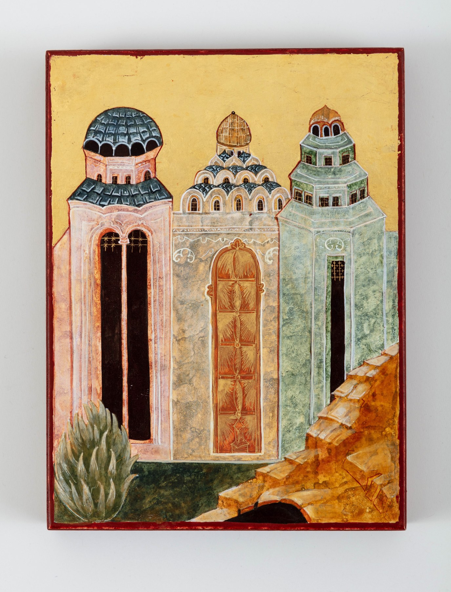
...at first, practice on
a wooden slate board
Ode to the Calligrapher by Ibn Bawwab
Translated by M. Zakariya
Welcome to Lami Art Studio.
Our work here is about exploring West Africa Islamic Art, Islamic Arts, Arabic and English Calligraphy and how it all comes together.
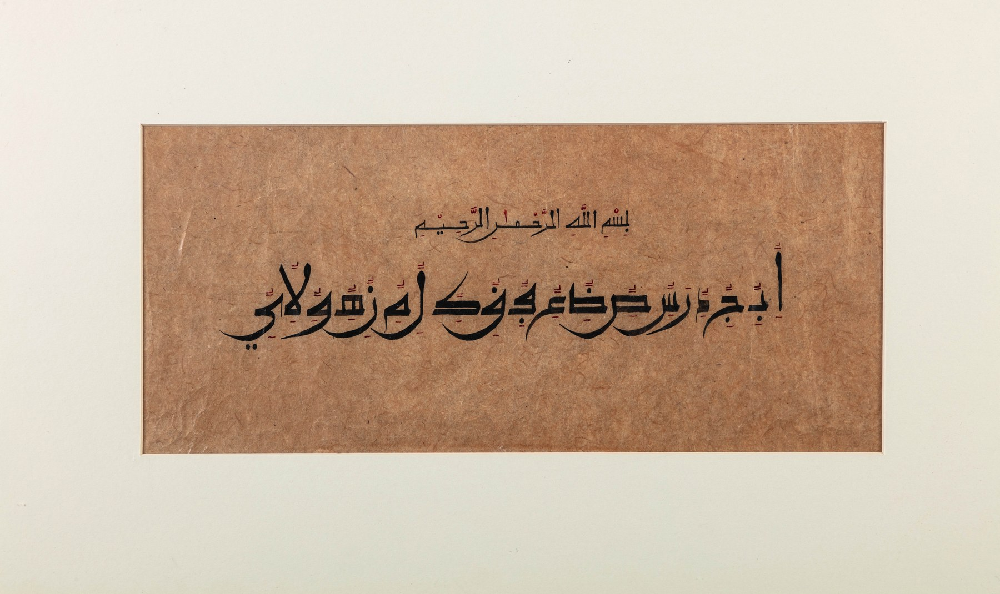
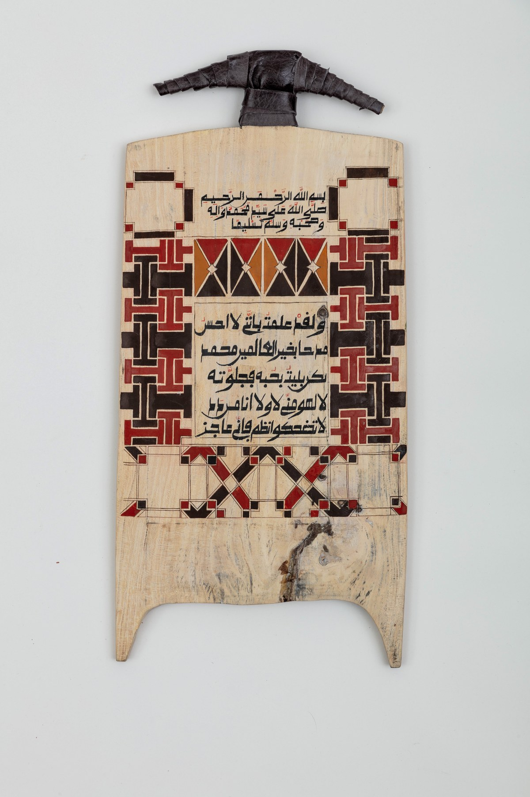
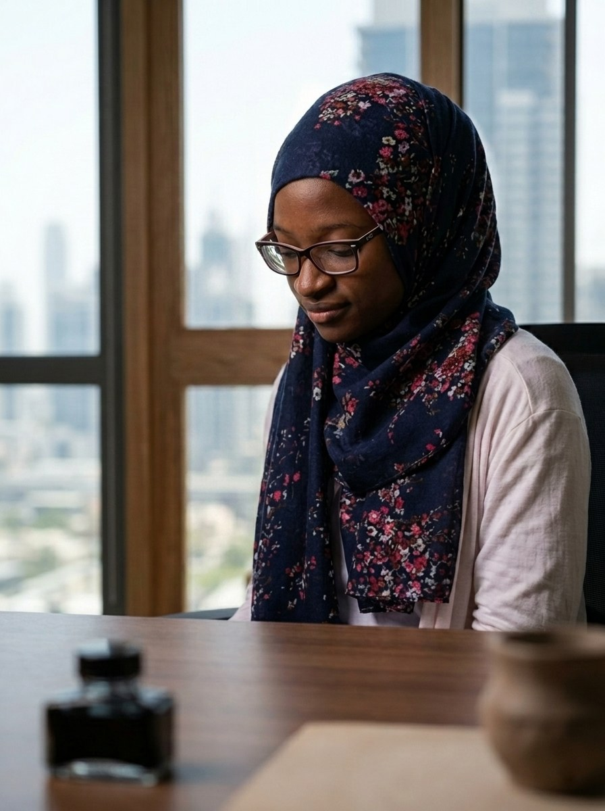
Halima Bashir was born and raised in Nigeria, and draws influence from Arabic calligraphy script predominant in West Africa called Sudani and patterns from craftwork in northern Nigeria.
Our vision is to craft stories and connections through Islamic arts. It is all about building connections with all these elements, expressed through art pieces, worksheets and research.
Visit the
gallery

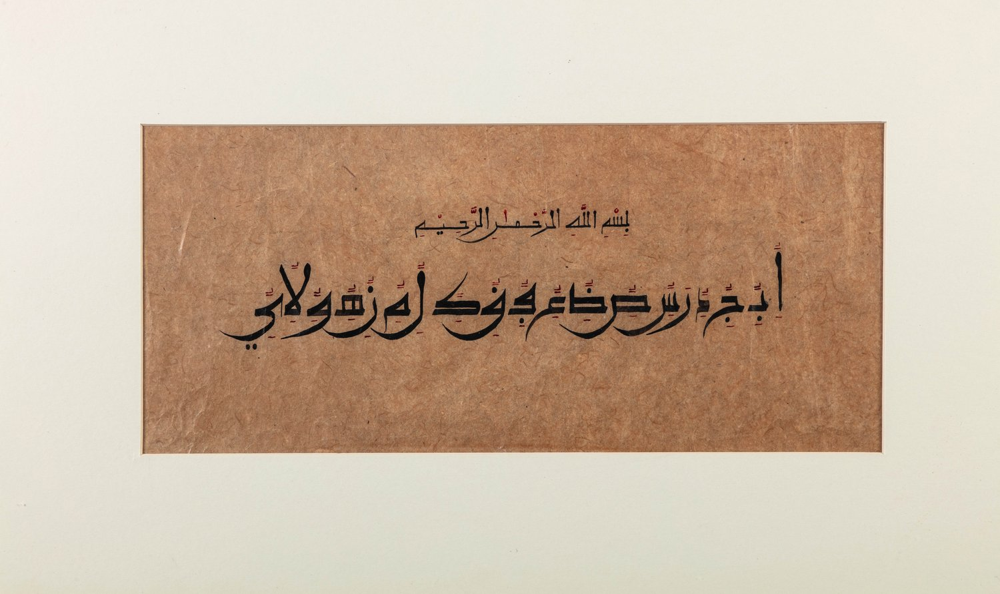
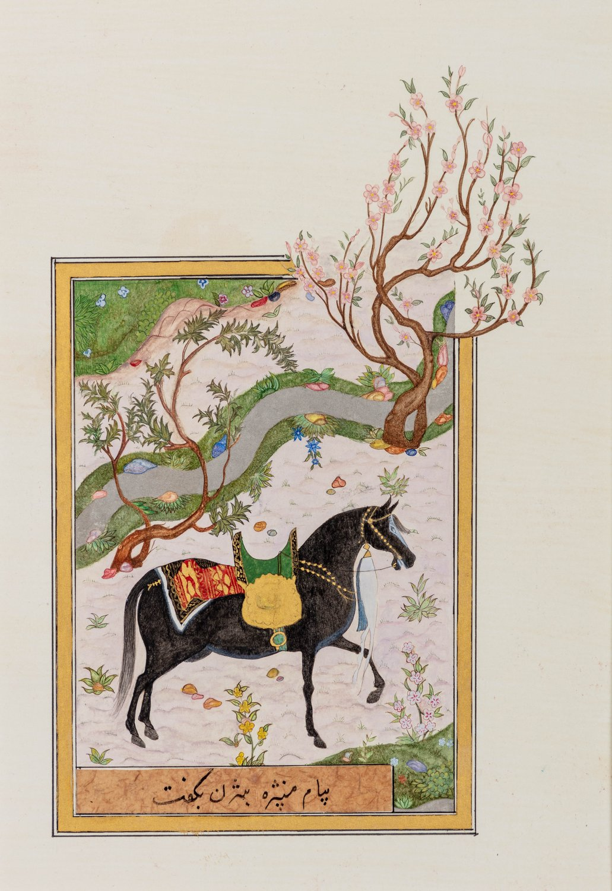
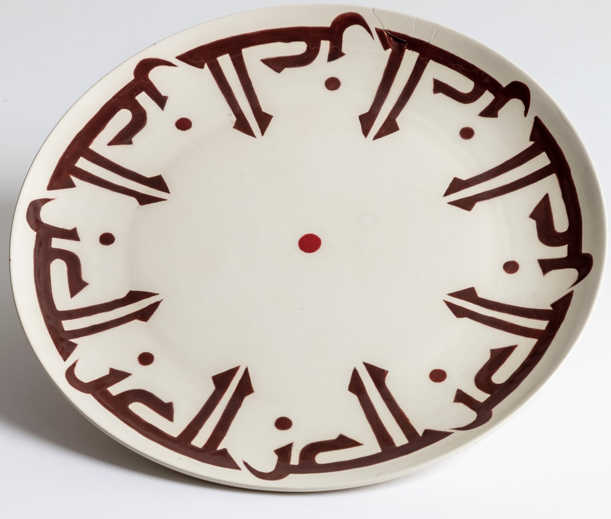
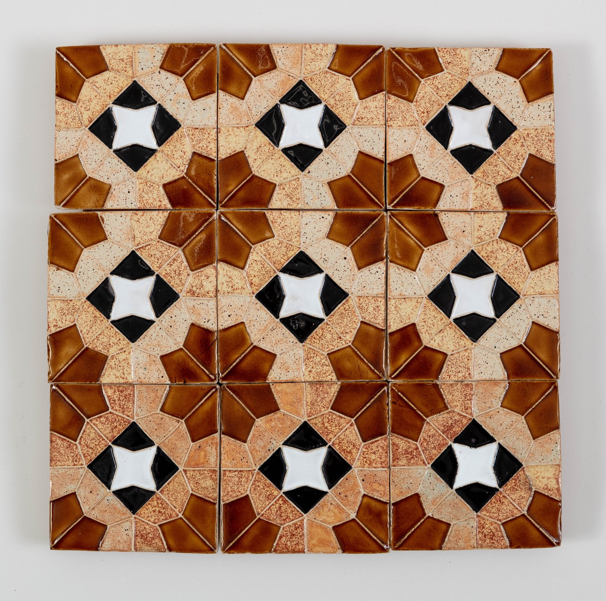
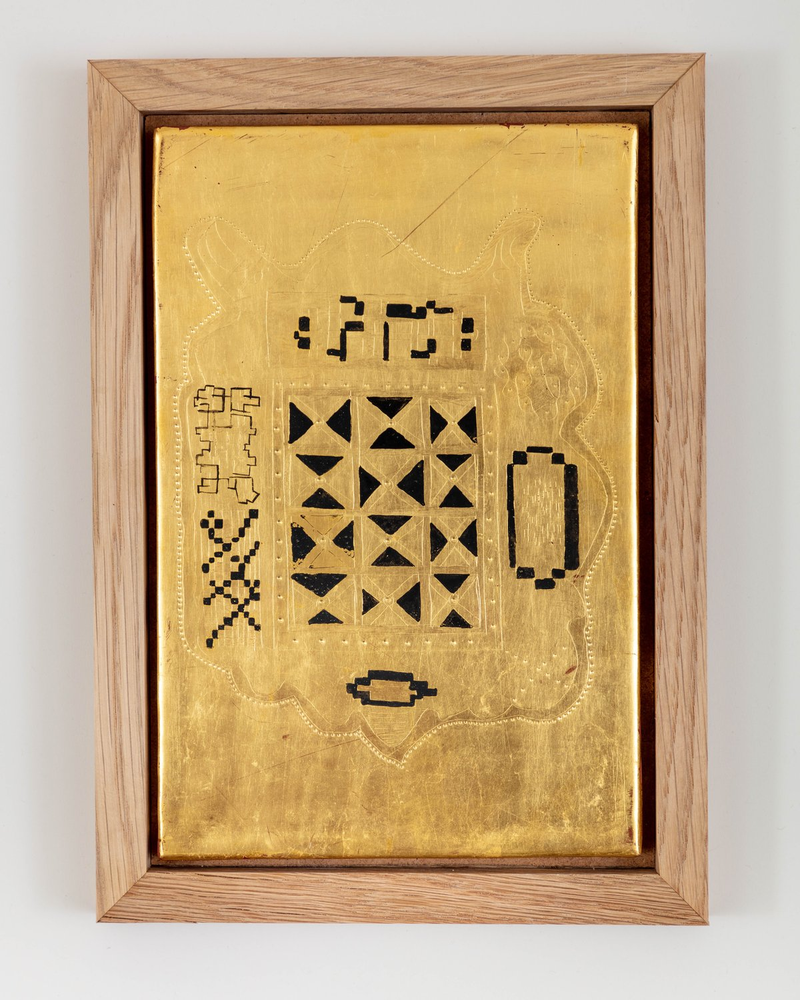
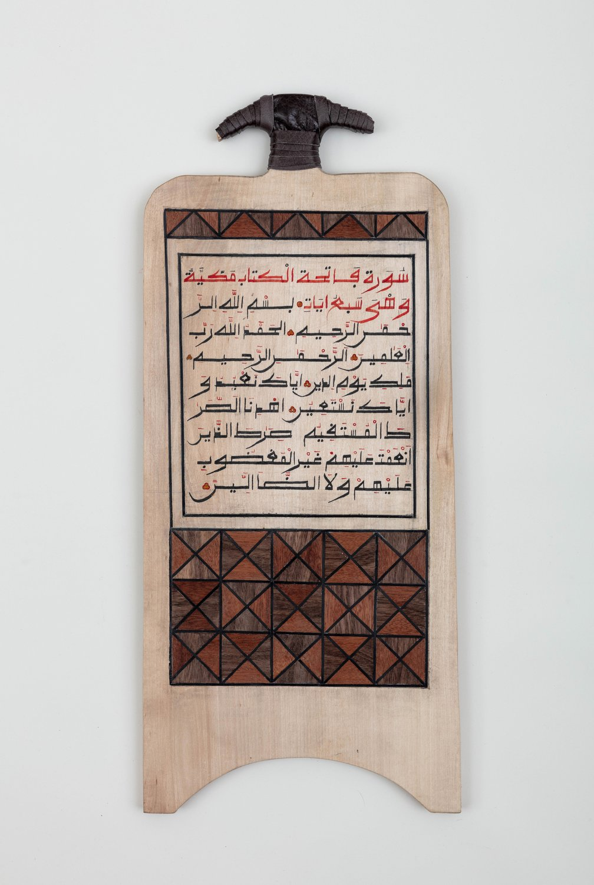
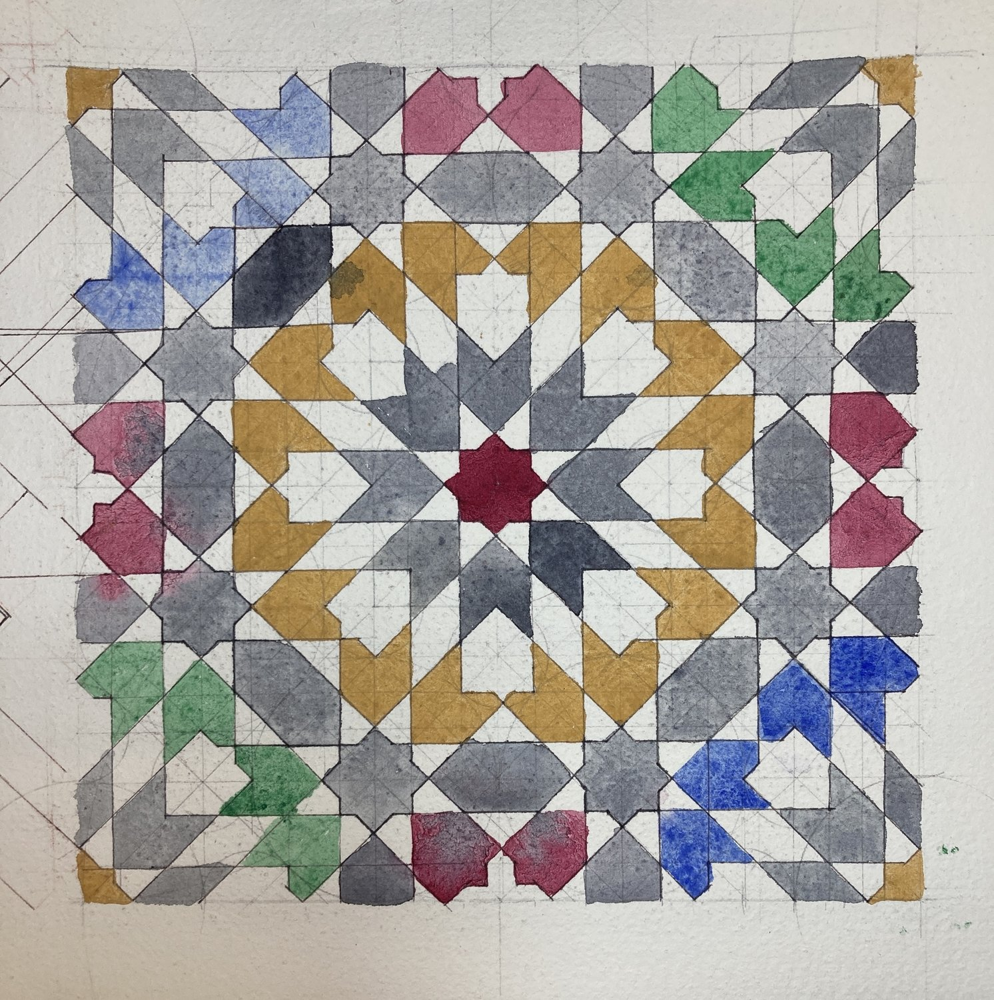
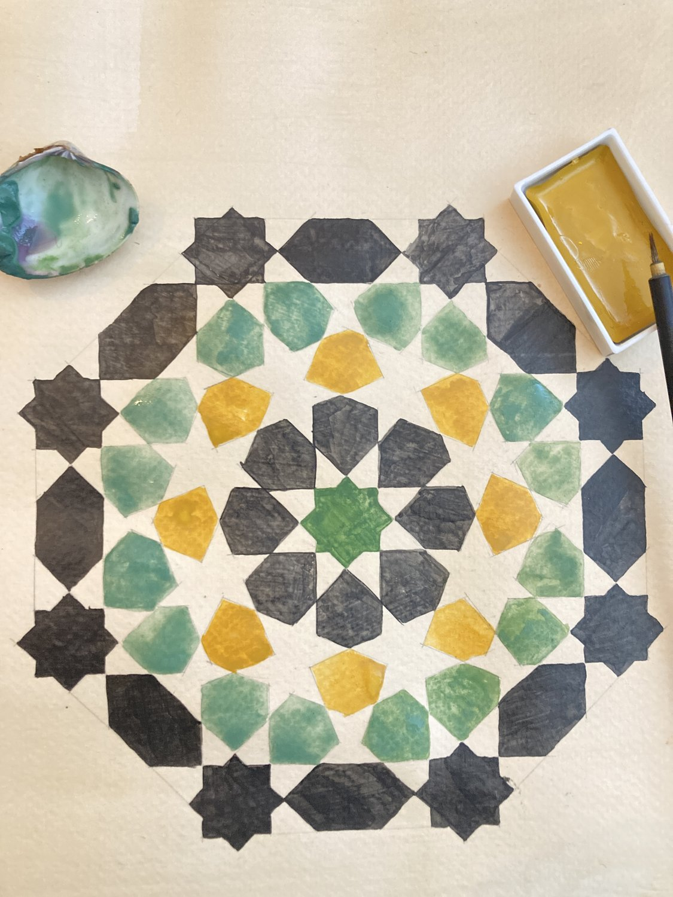
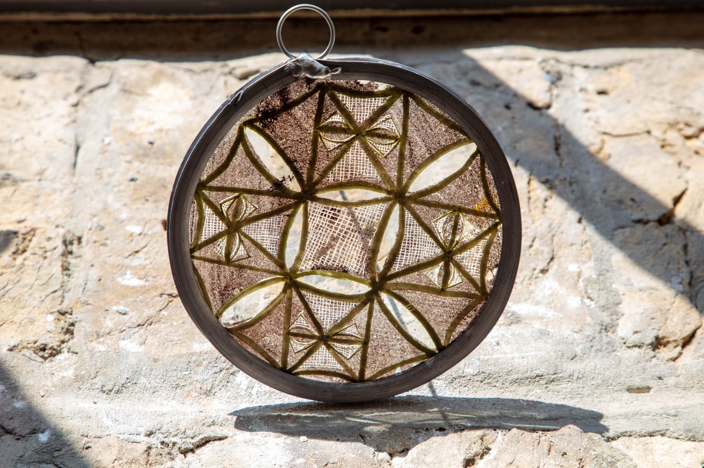
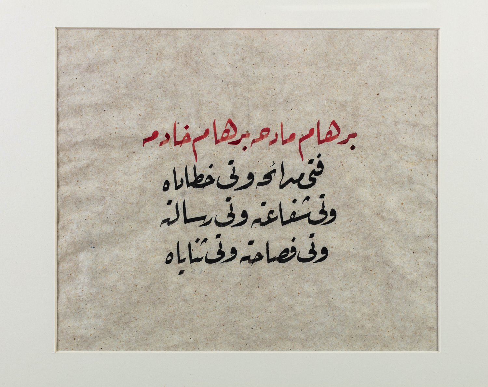
Let’s tell a story together and let’s discover a world of Arabic calligraphy, West Africa and Islamic art.
halima@lamiartstudio.comHalima Lami